Kinematics
Linear Graph
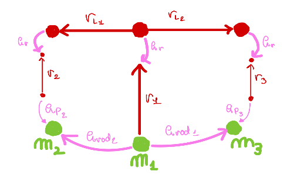
Revolute joint
| > | hR := <0,0,0>; |
| 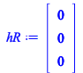 | (3.1) |
Prismatic joint element
| > | hp := s(t)*<1,0,0>; |
| 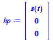 | (3.2) |
Arm link elements fixed
| > | rL__1 := <-L,0,0>;
rL__2 := <L,0,0>; |
| 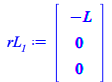 | |
| 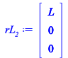 | (3.3) |
Arm link element
| > | r3 := Rz(theta__3(t)).<-L__s0,0,0>;
|
| (3.4) |
Prismatic joint element
| > | hp3 := Rz(theta__3(t)).(s__3(t)*<1,0,0>); |
| (3.5) |
Arm link element
| > | r1 := Rz(theta__1(t)).<-L__s0,0,0>; |
| 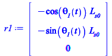 | (3.6) |
Arm link element
| > | r2 := Rz(theta__2(t)).<-L__s0,0,0>; |
| 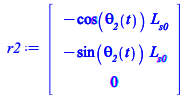 | (3.7) |
Prismatic joint element
| > | hp2 := Rz(theta__2(t)).(s__2(t)*<1,0,0>); |
| 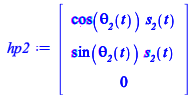 | (3.8) |
Rotation Matrix 1
| > | Rs__1 := Rz(theta__1(t));
is_uvec__1 := %[1..3,1]: js_uvec__1 := %%[1..3,2]: is_uvec__1,js_uvec__1; |
| 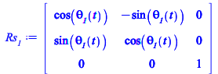 | |
| 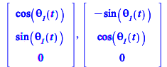 | (3.9) |
Rotation Matrix 2
| > | Rs__2 := Rz(theta__2(t));
is_uvec__2 := %[1..3,1]: js_uvec__2 := %%[1..3,2]: is_uvec__2,js_uvec__2; rs__2 := Rs.<L__s+s__2(t),0,0>: |
| 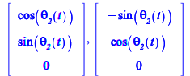 | (3.10) |
Rotation Matrix 3
| > | Rs__3 := Rz(theta__3(t));
is_uvec__3 := %[1..3,1]: js_uvec__3 := %%[1..3,2]: is_uvec__3,js_uvec__3; rs__3 := Rs.<L__s+s__3(t),0,0>: |
| (3.11) |
There are two circuits (2 rod joint and spring element) to derive the constraint equations
Rod element kinematic and constraint
| > | H__rod1 := -(rL__2-r3+hp3+r1);
Phi1 := simplify( Transpose(H__rod1).H__rod1-L^2 ); |
 |
|
| 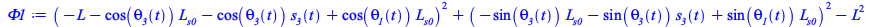 | (3.12) |
| > | H__rod2 := rL__1+r1+hp2-r2;
Phi2 := simplify( Transpose(H__rod2).H__rod2-L^2 ); |
| 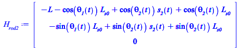 | |
| 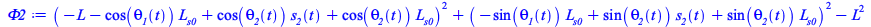 | (3.13) |
Overall kinematic elements
| > | rL__1,rL__2,r1,r2,r3,hp2,hp3; |
| 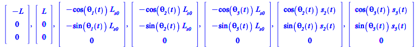 | (3.14) |
Position and velocity analysis